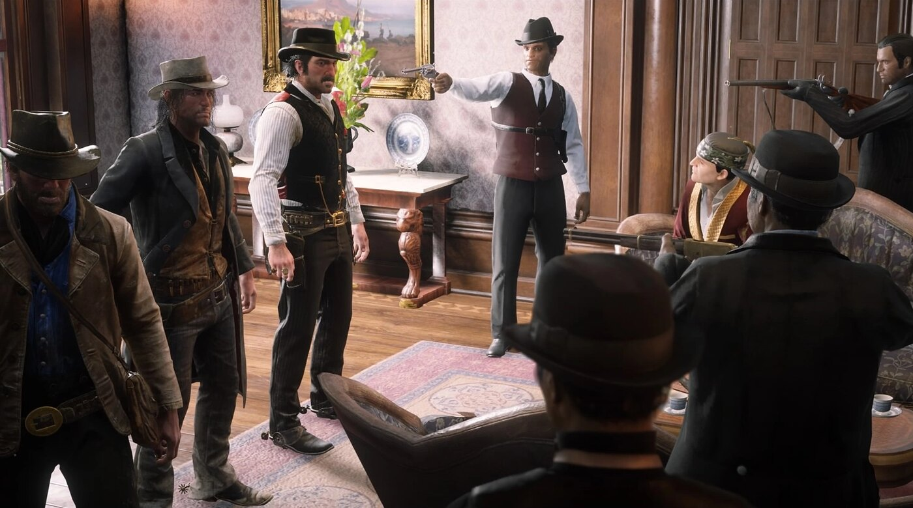
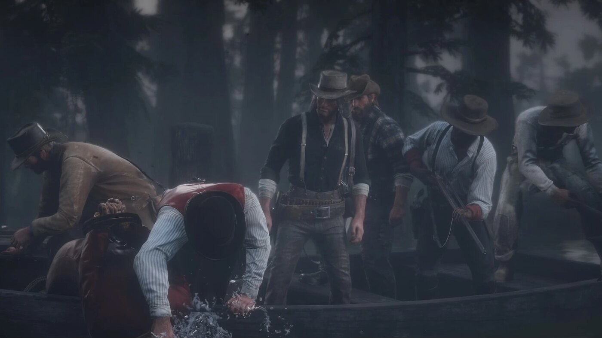

Guide de l'histoire · Red Dead Redemption 2 Chapitre 4 : Saint-Denis Red Dead Redemption 2 Chapitre 4 sur 6 Shady Belle & Saint-Denis, Lemoyne 1899 Par Joseph Lambert · Mis à jour le 3 juillet 2026 Saint-Denis, la ville industrielle et fluviale où se déroule une grande partie du Chapitre 4. Après la querelle du Lemoyne, le gang Van der Linde s'installe à Shady Belle, un manoir de plantation abandonné dans le marais, et marche sur la ville de Saint-Denis pour récupérer Jack Marston. Le Chapitre 4 est le chapitre urbain de l'histoire, et son tournant : le gang récupère l'enfant, [[dutch-van-der-linde|Dutch]] assassine un chef de la pègre, et un braquage de banque tourne au désastre. Spoilers complets sur le Chapitre 4 de Red Dead Redemption 2. Cadre : Shady Belle et la ville Le gang établit son nouveau camp à Shady Belle, un manoir en ruine du Bayou Nwa. Tout près se trouve Saint-Denis, une grande ville industrielle et fluviale inspirée de La Nouvelle-Orléans, avec ses tramways, ses becs de gaz et son éclairage électrique. Après des chapitres passés en pleine nature, l'histoire entre dans une ville moderne où le banditisme d'un autre âge du gang paraît de plus en plus décalé.  Dutch et le gang rencontrent Angelo Bronte, le chef de la pègre qui contrôle Saint-Denis. Récupérer Jack chez Angelo Bronte Dans « Angelo Bronte, a Man of Honor », Dutch et Arthur se rendent au manoir d'Angelo Bronte, le chef de la pègre qui règne sur Saint-Denis et à qui Jack Marston a été vendu à la fin du Chapitre 3. Bronte rend l'enfant sain et sauf en échange d'un service, et Jack retrouve John et Abigail. La mort de Kieran Duffy La guerre du gang contre les O'Driscoll le rattrape jusqu'à Shady Belle. Kieran Duffy, l'ancien O'Driscoll qui avait gagné sa place au camp, est capturé et décapité par son ancien gang : son corps est renvoyé à cheval dans le camp pour déclencher une embuscade. C'est un rappel brutal que la vendetta est loin d'être terminée. Le meurtre d'Angelo Bronte Se méfiant de Bronte, le gang se retourne contre lui. Dans « Revenge is a Dish Best Eaten », ils l'enlèvent de son manoir, et Dutch le noie avant de livrer son corps à un alligator. Ce meurtre est un tournant : c'est le signe le plus net que le jugement de Dutch se délite, et il trouble jusqu'à Hosea et Arthur.  Dutch tue Angelo Bronte, signe de son instabilité grandissante. Le braquage de la banque de Saint-Denis Le chapitre culmine avec le plus gros coup du gang : le braquage de la Lemoyne National Bank dans « Banking, the Old American Art ». C'est un piège. L'agent Milton et les Pinkerton encerclent la banque, et le braquage vire à la fusillade en fuite. Lenny Summers est abattu pendant la fuite, et Milton exécute Hosea Matthews en pleine rue, sous les yeux d'Arthur. Les survivants gagnent les quais et embarquent clandestinement sur un navire, qui fait naufrage en mer et les échoue loin de chez eux. Personnages clés Le Chapitre 4 introduit le chef de la pègre Angelo Bronte et met en avant le Pinkerton agent Milton. Il tue aussi trois membres du gang : Kieran Duffy, Lenny Summers et, plus douloureux encore, Hosea Matthews. Arthur, Dutch, John, Bill et Javier survivent, pour faire naufrage. Les événements clés du Chapitre 4 Le gang s'installe à Shady Belle, dans les marais aux abords de Saint-Denis. Dutch et Arthur récupèrent Jack Marston auprès du chef de la pègre Angelo Bronte. Kieran Duffy est capturé et tué par les O'Driscoll à Shady Belle. Dutch enlève et assassine Bronte, signe de son jugement qui se dégrade. Le braquage de la banque de Saint-Denis est un piège des Pinkerton ; Lenny Summers et Hosea Matthews y laissent la vie. Les survivants fuient en bateau et font naufrage, ce qui prépare le Chapitre 5 (Guarma). PrécédentChapitre 3 : Clemens Point Guide de l'histoireTous les chapitres